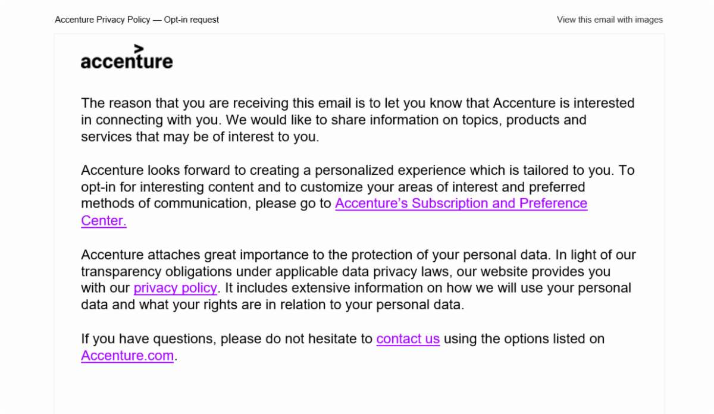

What are management teams and CMOs talking about? In leadership and marketing meetings, topics typically cut across a wide spectrum of business issues and marketing strategies. But some topics come up over and over. In addition to AI and the buzz over ChatGPT, here's my list of the “Top 10” themes that surface and my take on them.
CX across the customer journey: Customer experience (CX) has become a major focus of all businesses. While CX is defined by both online and offline touchpoints across the customer journey, companies have been largely focused on improving digital interactions. This puts an emphasis on the quality of the user experience (UX) to ensure websites and apps offer intuitive navigation, comprehensive self-service options, a strong "chat" capability and easy-to-complete transactions. But this CX focus may be a bit shortsighted. NICE CXone research reveals that consumers want the handoff between digital and physical interactions to be seamless – a capability that is falling short of expectations. With 57% of customers abandoning a brand after one or two negative interactions, companies need to make sure their CX plans adequately bridge the physical/digital divide.
Three cheers for due diligence: The smartest, most informed business decisions result from deep analyses of people, products and systems. Regardless, due diligence has often taken a backseat to the lure of shiny ideas and personalities. In an instant information, influencer culture, it’s tempting to rely on cursory and superficial reviews. Remember that shiny things on the surface may be rotten underneath (the FTX scandal is a great example). Regardless of the business issue, it's essential to dig deep and not be fooled by perceptions.
Make thought leadership just that: As the zenith of content marketing programs, thought leadership should reflect forward-looking ideas, themes or points-of-view. Business intelligence is not thought leadership. Nor is AI-generated prose that's often inaccurate. Smart marketers need to make this distinction and deliver intelligent, provocative material with the appropriate voice.
DTC presents an option for B2B: As digital transformation changes the business landscape, it's also changing the marketing paradigm. An increasing number of B2B companies are turning to direct-to-consumer (DTC) marketing strategies to gain awareness and traction. The goal is to make business buyers take notice of the buzz around a product and potentially boost their valuations. OpenAI and its ChatGPT is a good example! For B2B companies, utilizing DTC approaches is a strategic marketing alternative to explore.
Mining for data: Data has been called today's "gold" and as the lifeblood of any organization, collecting data has become critical. It’s also become a bigger challenge. With privacy laws looming, third-party cookies expected to disappear (Google says this will happen in 2024) and individuals taking greater pains to protect their personal info, companies need to take action. As a result, B2B marketers are expected to spend $3.77 billion on third-party data this year are expected to spend $3.77 billion on third-party data this year. Smart companies are also using targeted outreach to ensure opt-ins and collect data preferences. Here's an example from Accenture:

Next up in social media: Social media strategies will continue to be a leading driver of consumer engagement, but the verdict is out on which platforms will be the preferred players. While LinkedIn has a secure niche in B2B, uncertainties about Twitter have emerged. And as E-Marketer reports, with TikTok a target of national security concerns, Instagram (already the major Meta player) and its Reels may be the big winner. This is very much a TBD.
An effective hybrid model: Remote working has become the new "norm" as many workers prefer the flexibility that working-from-home (WFH) affords. Most managers want to honor this working model, but they also recognize there is no replacing in-office collaboration to deliver shared thinking and accelerate work results. There is another benefit of the in-office experience: creating opportunities for social interaction and relationship building. According to Gartner, this is a particular need for Gen Z workers whose history is defined by social isolation and whose interest, as Business Insider reports, is in being part of a community. There is no doubt that WFH is great, but in-person work can serve to better meet business goals while supporting professional and personal growth. Developing a hybrid working model that addresses both business and individual needs and goals is a must.
Quiet hiring is here: The concept known as quiet quitting has helped to usher in quiet hiring – the reallocation and training of employees in lieu of hiring new full-time workers. At a time of digital transformation and a tight job market, this is a winning strategy. Regardless, it is still a delicate dance. Success depends on business leaders isolating and agreeing on strategic growth areas. It means ensuring buy-in from managers on areas to de-prioritize. And it depends on engaging with impacted employees to incentivize their participation in the form of compensation, skills and career opportunities.
Diversity, Equity and Inclusion must be all that: DE&I is not only critical in our multi-cultural world but also serves to address a tight labor market. As DE&I initiatives take on racism and sexism, ageism should be a focus too. Older workers may not be as tech savvy, but their knowledge and experience present a strong balance to younger employee perspectives. And contrary to what some may think, older workers are not looking to supplant younger professionals in leadership roles. Many either need the income to plan for longer life expectancies (today's "New Longevity") or just want to contribute in a meaningful, collaborative way. Regardless, that’s real DE&I and a benefit to all.
Incorporate and operate by Purpose: Since the fall of 2018, when the US Chamber of Commerce acknowledged the need to shift from a shareholder to stakeholder focus, Purpose has emerged as a company’s business compass. Defining where and how people work, what consumers buy, and in what they invest, Purpose must now be incorporated into overall business strategies. This is essential for ensuring both relevancy in an increasingly values-oriented marketplace and consideration in the growing number of sustainable, impact and ESG investing mandates. In 2023, companies will lose out if they have yet to define and articulate their purpose and then fiercely operate by it.
What big themes are you talking about? Let us know!
This Insight was prepared by Maria Lilly. Feel free to reach out with any questions or comments.